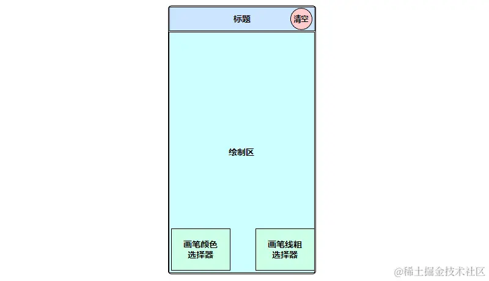
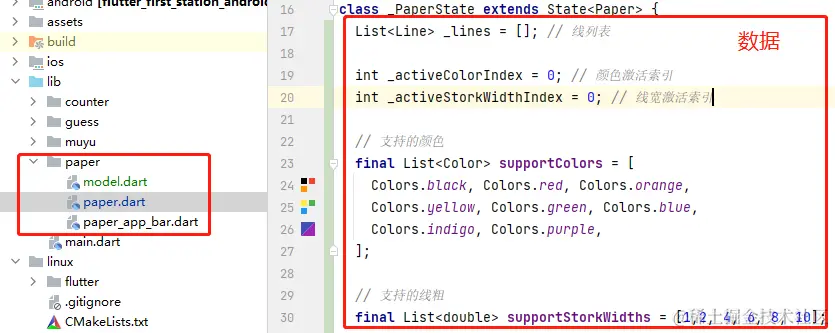
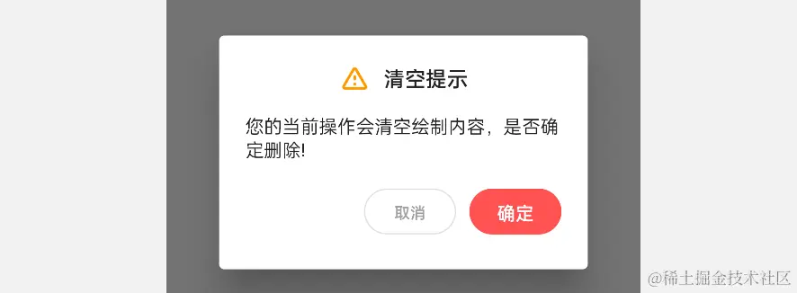

- 01 前言-教程内容导读.md.html
- 02 Flutter 开发环境的搭建.md.html
- 03 新手村基础 Dart 语法 (上).md.html
- 04 新手村基础 Dart 语法 (下).md.html
- 05 Flutter 计数器项目解读.md.html
- 06 猜数字界面交互与需求分析.md.html
- 07 使用组件构建静态界面.md.html
- 08 状态数据与界面更新.md.html
- 09 校验结果与提示信息.md.html
- 10 动画使用与状态周期.md.html
- 11 猜数字整理与总结.md.html
- 12 电子木鱼界面交互与需求分析.md.html
- 13 电子木鱼静态界面构建.md.html
- 14 计数变化与音效播放.md.html
- 15 弹出选项与切换状态.md.html
- 16 用滑动列表展示记录.md.html
- 17 电子木鱼整理与总结.md.html
- 18 白板绘制界面交互与需求分析.md.html
- 19 认识自定义绘制组件.md.html
- 20 通过手势在白板上绘制.md.html
- 21 白板画笔的参数设置.md.html
- 22 撤销功能与画板优化.md.html
- 23 应用界面整合.md.html
- 24 数据的持久化存储.md.html
- 25 网络数据的访问.md.html
- 26 教程总结与展望.md.html
- 捐赠
20 通过手势在白板上绘制
1. 白板绘制思路分析
对功能需求的分析主要从 界面数据信息、交互与数据维护、界面构建逻辑 三个方面来思考。
- 数据信息
界面上需要呈现多条线，每条线由若干个点构成，另外可以指定线的颜色和粗细。所以这里可以封装一个 Line 类维护这些数据：
class Line {
List<Offset> points;
Color color;
double strokeWidth;
Line({
required this.points,
this.color = Colors.black,
this.strokeWidth = 1,
});
}
然后需要 List<Line> 线列表来表示若干条线；由于支持颜色和粗细选择，需要给出支持的颜色、粗细选项列表，以及两者的激活索引：
List<Line> _lines = []; // 线列表
int _activeColorIndex = 0; // 颜色激活索引
int _activeStorkWidthIndex = 0; // 线宽激活索引
// 支持的颜色
final List<Color> supportColors = [
Colors.black, Colors.red, Colors.orange,
Colors.yellow, Colors.green, Colors.blue,
Colors.indigo, Colors.purple,
];
// 支持的线粗
final List<double> supportStorkWidths = [1,2, 4, 6, 8, 10];
- 交互与数据维护
线列表数据的维护和用户的拖拽事件息息相关：
- 用户开始拖拽开始时，需要创建 Line 对象，加入线列表。
- 用户拖拽过程中，将触点添加到线列表最后一条线中。
- 用户点击清除时，清空线列表。
- 用户可以通过交互选择颜色，更新颜色激活索引。
- 用户可以通过交互选择线宽，更新线宽激活索引。
- 界面构建逻辑
在该需求中的数据和交互分析完后，就可以考虑界面的构建逻辑了。下面是一个示意简图:

- 使用 Scaffold + Appbar 组件构建整体结构。
- 使用 CustomPaint 组件构建主体内容，作为可绘制区域。
- 通过 GestureDetector 组件监听拖拽手势，维护数据变化。
- 通过 Stack 组件将画笔颜色和线粗选择器叠放在绘制区上。
- 画笔颜色和线粗选择器的构建将在下一篇详细介绍。
到这里，主要的数据和交互，以及实现的思路就分析的差不多了，接下来就进入项目代码的编写。
2. 手势交互与数据维护
如下，新建一个 paper 文件夹，用于盛放白板绘制的相关代码。其中：
model.dart中盛放相关的数据模型，比如Line类。paper_app_bar.dart是抽离的头部标题组件。paper.dart是白板绘制的主界面。
首先在 _PaperState 中放入之前分析的数据：

想要监听用户的拖拽手势，可以使用 GestureDetector 组件的 pan 系列回调。如下所示，在 CustomPaint 之上嵌套 GestureDetector 组件；通过 onPanStart 可以监听到用户开始拖拽那刻的事件、通过 onPanUpdate 可以监听到用户拖拽中的事件：
body: GestureDetector(
onPanStart: _onPanStart,
onPanUpdate: _onPanUpdate,
child: CustomPaint(
//略同...
),
)
void _onPanStart(DragStartDetails details) {}
void _onPanUpdate(DragUpdateDetails details) {}
回调中的逻辑处理也比较简单，在开始拖拽时为线列表添加新线；此时新线就是 _lines 的最后一个元素，在拖拽中，为新线添加点即可:
// 拖拽开始，添加新线
void _onPanStart(DragStartDetails details) {
_lines.add(Line(points: [details.localPosition],));
}
// 拖拽中，为新线添加点
void _onPanUpdate(DragUpdateDetails details) {
_lines.last.points.add(details.localPosition);
setState(() {
});
}
3. 画板的绘制逻辑
在 PaperPainter 中处理绘制逻辑，绘制过程中需要线列表的数据，而数据在 _PaperState 中维护。可以通过构造函数，将数据传入 PaperPainter 中，以供绘制时使用：
class PaperPainter extends CustomPainter {
PaperPainter({
required this.lines,
}) {
_paint = Paint()
..style = PaintingStyle.stroke
..strokeCap = StrokeCap.round;
}
late Paint _paint;
final List<Line> lines;
@override
void paint(Canvas canvas, Size size) {
for (int i = 0; i < lines.length; i++) {
drawLine(canvas, lines[i]);
}
}
///根据点集绘制线
void drawLine(Canvas canvas, Line line) {
_paint.color = line.color;
_paint.strokeWidth = line.strokeWidth;
canvas.drawPoints(PointMode.polygon, line.points, _paint);
}
@override
bool shouldRepaint(CustomPainter oldDelegate) => true;
}
绘制逻辑在上面的 paint 方法中，便历 Line 列表，通过 drawPoints 绘制 PointMode.polygon 类型的点集； Line 对象中的颜色和边线数据，可以在绘制前为画笔设置对应属性。最后，在 _PaperState 状态类中，当 PaperPainter 对象创建时，将 _lines 列表作为入参提供给画板即可：
| ———————————————————— | ———————————————————— |
--->[_PaperState]----
child: CustomPaint(
painter: PaperPainter(
lines: _lines
),
4.弹出对话框
在点击清除按钮时，清空线列表。一般对于清除的操作，需要给用户一个确认的对话框，从而避免误操作。如下所示：
| 点击弹框 | 确认清除 |
|---|---|
弹出对话框可以使用框架中提供的 showDialog 方法，在 builder 回调函数中创建需要展示的组件。这里封装了 ConformDialog 组件用于展示对话框，将一些文字描述作为参数。这样其他地方想弹出类似的对话框，可以用 ConformDialog 组件，这就是封装的可复用性。
void _showClearDialog() {
String msg = "您的当前操作会清空绘制内容，是否确定删除!";
showDialog(
context: context,
builder: (ctx) => ConformDialog(
title: '清空提示',
conformText: '确定',
msg: msg,
onConform: _clear,
));
}
// 点击清除按钮，清空线列表
void _clear() {
_lines.clear();
setState(() {
});
}
对话框背景是不透明灰色，这种展示效果可以使用 Dialog 组件；弹框整体结构也比较简单，是上中下竖直排列，可以使用 Column 组件；标题、消息内容、按钮这里通过三个函数来构建：
小练习: 自己完成 ConformDialog 中三个构建函数的逻辑。

class ConformDialog extends StatelessWidget {
final String title;
final String msg;
final String conformText;
final VoidCallback onConform;
ConformDialog({
Key? key,
required this.title,
required this.msg,
required this.onConform,
this.conformText = '删除',
}) : super(key: key);
@override
Widget build(BuildContext context) {
return Dialog(
child: Padding(
padding: const EdgeInsets.all(20.0),
child: Column(
crossAxisAlignment: CrossAxisAlignment.start,
mainAxisSize: MainAxisSize.min,
children: <Widget>[
_buildTitle(),
_buildMessage(),
_buildButtons(context),
],
),
),
);
}
//...
}
5. 本章小结
本章主要完成白板绘制的基础功能，包括整体布局结构、监听拖拽事件，维护点集数据、以及绘制线集数据。其中蕴含着数据和界面展现的关系，比如，数据是如何产生的、数据在用户的交互期间有哪些变化、数据是如何呈现到界面上的，大家可以自己多多思考和理解。
到这里，界面上的线条会随着手指的拖动而呈现，完成了最基础的功能，当前代码位置 paper。下一篇将介绍一下，如何通过交互来修改画笔颜色和粗细，让界面的呈现更加丰富。
© 2019 - 2023 Liangliang Lee. Powered by gin and hexo-theme-book.